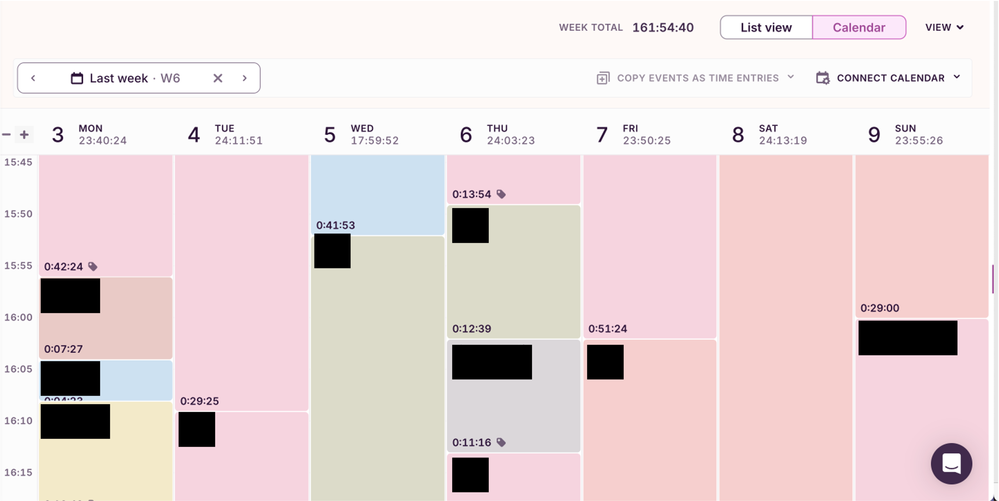
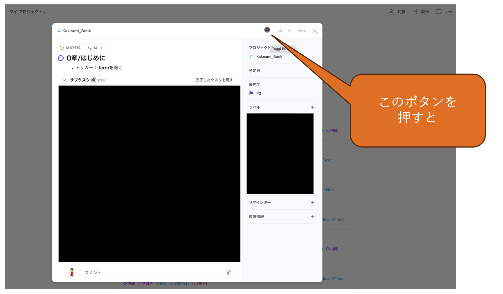

1. 記録#

Summary
Todoistで管理したタスクを、Toggl trackと連携して作業時間を記録した
執筆中に構成が大きく変わったため、個別に作業時間を分解できない章がいくつかある（上巻1-2章、上巻3-4章、下巻5-6章）
まず必要になるのは、作業時間の記録です。 私は、 Todoist のタスクを Chrome拡張機能 を使って Toggl track と連携することで、作業時間を記録しました。
なお、TodoistやToggl trackが優れたツールであることは間違いありませんが、 この選択は私の経験と好みに依る部分も大きいと思います。 無数に選択肢はありますので、 興味のある方は様々なツールを試してみると良いでしょう。
1.1. Todoistの概要#
Todoist は、シンプルで使いやすいタスク管理ツールです。 主な特徴は以下の通りです。
タスクの階層化：プロジェクトや親タスク・子タスクを使って、タスクを体系的に整理できる
優先順位と期限の設定：タスクの重要度や期限を直感的・明示的に管理できる
コメントとファイル添付：タスクに関して、マークダウン記法でコメントしたり、それに対して絵文字でリアクションしたりできる
モバイルアプリとの同期：パソコン・スマートフォン・タブレット間でデータを簡単に同期できる
私は「Kakeami_Book」というプロジェクト[1]
を作成し、本書執筆に関する全てのタスクを管理しました。
以下はその一部です。

本書の章構成と異なることに違和感を覚える方もいるかもしれません。 上図は、最初期の打合せで編集者と合意した章立てに基づいています。 執筆を進める中で、単冊構成から分冊構成となり[2]、 章の分割・追加・削除を余儀なくされました。 特に、上巻7章は初期案には存在しなかった章です。

本ブログで分析する執筆時間は、本書の章構成を厳密に反映したものではありません。 具体的には、
上巻1章と上巻2章
上巻3章と上巻4章
下巻5章と下巻6章
の執筆時間は不可分に合計されています。
1.2. Toggl trackの概要#
Toggl track は、直感的な操作で正確なタイムトラッキングができるツールです。 主な特徴は以下の通りです。
シンプルなインターフェース：クリックひとつで計測開始・停止ができる
豊富な集計機能：プロジェクト別、タグ別、期間別のレポートを自動生成できる
他ツールとの強力な連携：Chromeの拡張機能等を用いて、他のツールと簡単に連携できる
私は2019年ごろから現在まで24時間365日、秒単位で全ての作業時間を記録しています。 例えば以下は、ある週の記録結果です。 恥ずかしいため具体的な作業内容は黒塗りしましたが、 おおよその雰囲気は掴んで頂けるかと思います[3]。

異なる週ですが、ズームインすると以下のようになります。

今回は Chrome拡張機能 を用いることで、TodoistとToggl trackを連携させました。 以下で具体例を示します。
1.3. TodoistとToggl trackの連携#
例えば、上巻のまえがきを執筆する際に、下記のようにTogglボタンを押下すると、

下記のように、Toggl trackで「Kakeami_Book」プロジェクトの「0章/はじめに」の作業時間の記録が開始されます。

Toggl trackのWeb画面では、下記のように表示されます。

このように、一つ一つの作業時間を記録しました。 可能な限り実態に近づけるため、 トイレ休憩等のたびに計測を止めています [4]。
次章では、記録したデータを Toggl API を使ってダウンロードする方法を詳しく解説します